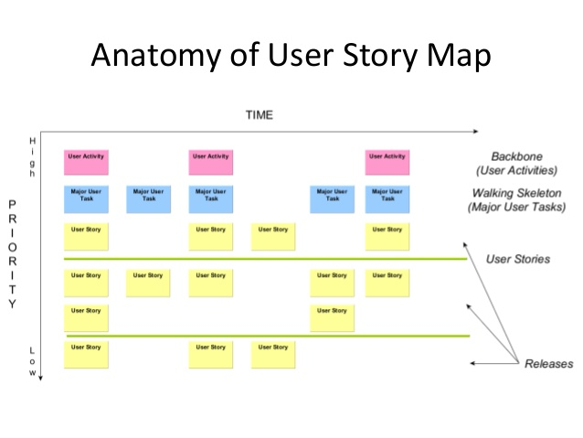
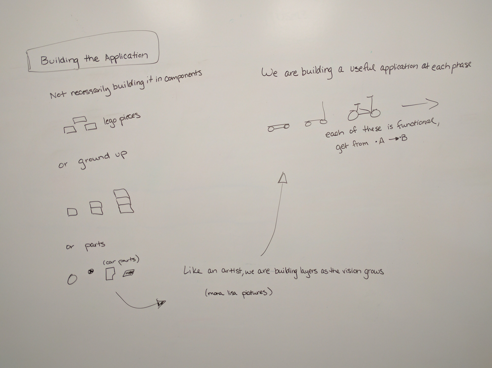
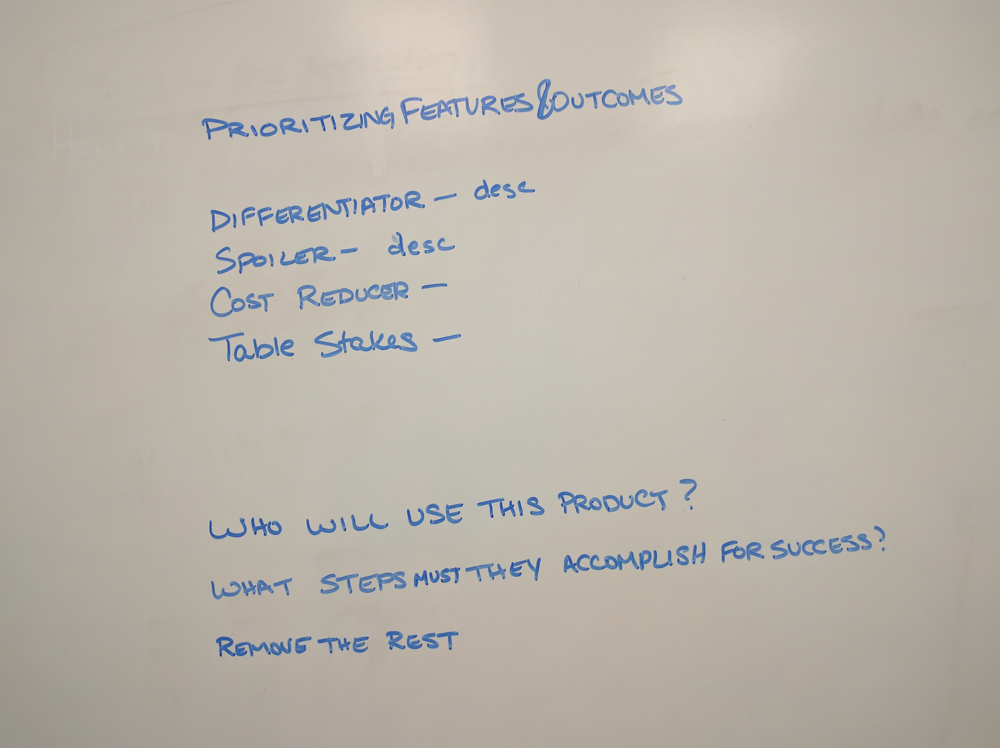
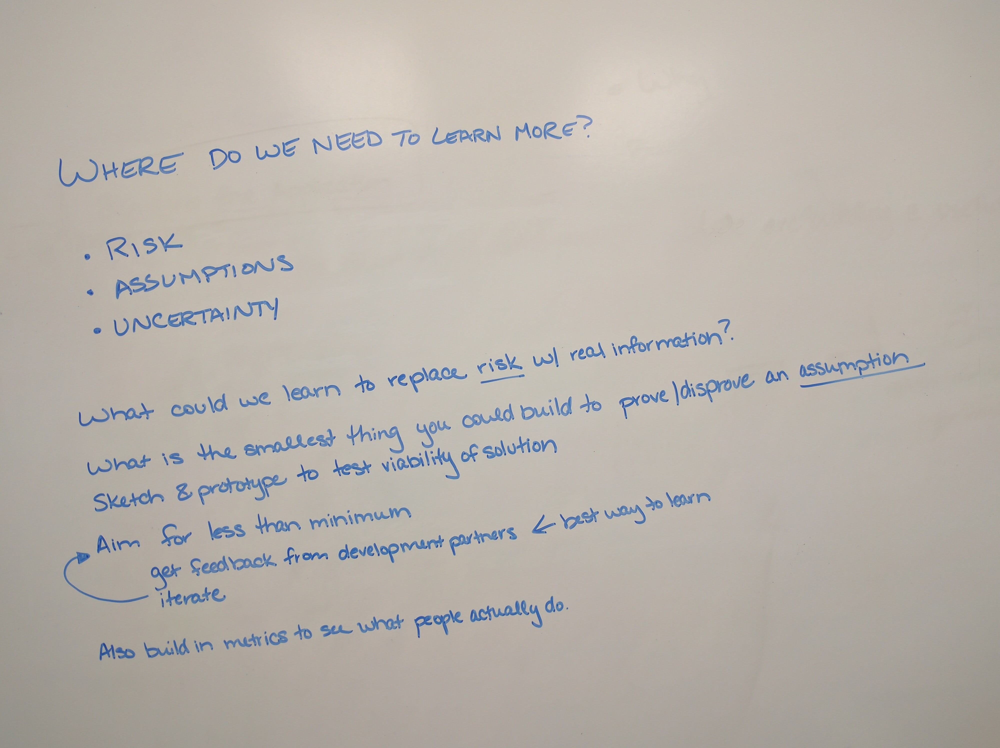

Whats Your Skateboard?

photo by [Kenny Louie(https://www.flickr.com/photos/kwl/)
photo by [Kenny Louie(https://www.flickr.com/photos/kwl/)
Application Developer at NC State University


Everyone who knows the process ... Not Just Developers
A diagram of a project that identifies the stories of the people and systems involved in a process.
Detail is added as we learn more about the project
The project can be an existing application or a new application.

Photo by Barnyz

When you have questions about an application or process
When you begin new work
Preferably before you being development
A large, clear wall or whiteboard.
"A user story is a tool used in Agile software development to capture a description of a software feature from an end-user perspective. The user story describes the type of user, what they want and why. A user story helps to create a simplified description of a requirement."
~Wikipedia
As a {role}, I want {feature} so that {reason}.
Composed of many user stories.
Tells the story of your application.
It can include parts of the story that happen outside of the application.
Users => actors in the story
Backbone => overview of the project; built from user stories; the frame;
User Tasks => add detail to the story
Objectives => organize and prioritize stories

Begin with user stories and work toward a narrative flow
Later, distill the story to build your backbone

Discovery is cheaper at the beginning of a project, than during implementation
(instead of perceived importance)



Content can be written in Markdown! New lines no longer need two angle brackets.
This will be in a separate paragraph
No need for multiple templates!